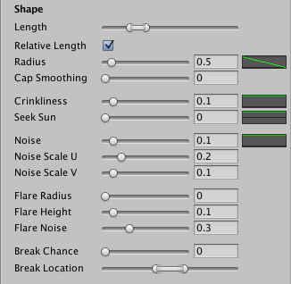
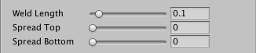

Branch Group Properties
Branch groups node is responsible for generating branches and fronds. Its properties appear when you have selected a branch, frond or branch + frond node.
Distribution
Adjusts the count and placement of branches in the group. Use the curves to fine tune position, rotation and scale. The curves are relative to the parent branch or to the area spread in case of a trunk.

| Group Seed | The seed for this group of branches. Modify to vary procedural generation. |
| Frequency | Adjusts the number of branches created for each parent branch. |
| Distribution | The way the branches are distributed along their parent. |
| Twirl | Twirl around the parent branch. |
| Whorled Step | Defines how many nodes are in each whorled step when using Whorled distribution. For real plants this is normally a Fibonacci number. |
| Growth Scale | Defines the scale of nodes along the parent node. Use the curve to adjust and the slider to fade the effect in and out. |
| Growth Angle | Defines the initial angle of growth relative to the parent. Use the curve to adjust and the slider to fade the effect in and out. |
Geometry
Select what type of geometry is generated for this branch group and which materials are applied. LOD Multiplier allows you to adjust the quality of this group relative to tree's LOD Quality.

| LOD Multiplier | Adjusts the quality of this group relative to tree's LOD Quality, so that it is of either higher or lower quality than the rest of the tree. |
| Geometry Mode | Type of geometry for this branch group: Branch Only, Branch + Fronds, Fronds Only. |
| Branch Material | The primary material for the branches. |
| Break Material | Material for capping broken branches. |
| Frond Material | Material for the fronds. |
Shape
Adjusts the shape and growth of the branches. Use the curves to fine tune the shape, all curves are relative to the branch itself.

| Length | Adjusts the length of the branches. |
| Relative Length | Determines whether the radius of a branch is affected by its length. |
| Radius | Adjusts the radius of the branches, use the curve to fine-tune the radius along the length of the branches. |
| Cap Smoothing | Defines the roundness of the cap/tip of the branches. Useful for cacti. |
| Growth | Adjusts the growth of the branches. |
| Crinkliness | Adjusts how crinkly/crooked the branches are, use the curve to fine-tune. |
| Seek Sun | Use the curve to adjust how the branches are bent upwards/downwards and the slider to change the scale. |
| Surface Noise | Adjusts the surface noise of the branches. |
| Noise | Overall noise factor, use the curve to fine-tune. |
| Noise Scale U | Scale of the noise around the branch, lower values will give a more wobbly look, while higher values gives a more stochastic look. |
| Noise Scale V | Scale of the noise along the branch, lower values will give a more wobbly look, while higher values gives a more stochastic look. |
| Flare | Defines a flare for the trunk. |
| Flare Radius | The radius of the flares, this is added to the main radius, so a zero value means no flares. |
| Flare Height | Defines how far up the trunk the flares start. |
| Flare Noise | Defines the noise of the flares, lower values will give a more wobbly look, while higher values gives a more stochastic look. |
| Breaking | Controls the breaking of branches. |
| Break Chance | Chance of a branch breaking, i.e. 0 = no branches are broken, 0.5 = half of the branches are broken, 1.0 = all the branches are broken. |
| Break Location | This range defines where the branches will be broken. Relative to the length of the branch. |

These properties are for child branches only, not trunks.
| **Welding ** | Defines the welding of branches onto their parent branch. Only valid for secondary branches. |
|---|---|
| Weld Length | Defines how far up the branch the weld spread starts. |
| Spread Top | Weld's spread factor on the top-side of the branch, relative to it's parent branch. Zero means no spread. |
| Spread Bottom | Weld's spread factor on the bottom-side of the branch, relative to it's parent branch. Zero means no spread. |
Fronds
Here you can adjust the number of fronds and their properties. This tab is only available if you have Frond geometry enabled in the Geometry tab.

| Frond Count | Defines the number of fronds per branch. Fronds are always evenly spaced around the branch. |
| Frond Width | The width of the fronds, use the curve to adjust the specific shape along the length of the branch. |
| Frond Range | Defines the starting and ending point of the fronds. |
| Frond Rotation | Defines rotation around the parent branch. |
| Frond Crease | Adjust to crease / fold the fronds. |
Wind